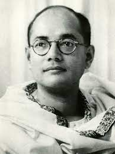

Subhash Chandra Bose
1897-1968
NETAJI
Subhas Chandra Bose 23 January 1897 – 18 August 1945 was an Indian nationalist whose defiance of British authority in India made him a hero among many Indians, but his wartime alliances with Nazi Germany and Imperial Japan left a legacy vexed by authoritarianism, anti-Semitism, and military failure. The honorific Netaji (Hindi: "Respected Leader") was first applied to Bose in Germany in early 1942—by the Indian soldiers of the Indische Legion and by the German and Indian officials in the Special Bureau for India in Berlin. It is now used throughout India.
Biographies
- He is known for his role in India's independence movement.
- A participant of the noncooperation movement and a leader of the Indian National Congress.
- he was part of the more militant wing and known for his advocacy of socialist policies.